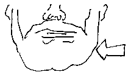

L'aut' jour dans eune des clâsses du Jèrriais dans eune êcole primaithe, iun des mousses mé d'mandît pouortchi qué j'avais eune barbe. Eh bein, j'tions à faithe du travas dans la clâsse et j'lî rêponnis tout sîmpl'yément qué j'l'aimais.
Mais pus tard sa tchestchion mé fît penser ès jours quand j'eus eune barbe pouor la preunmié fais.
Ch'fut en mil neu chents huiptante-chînq, ma preunmiéthe année à l'unnivèrsité, et jé n'prîns pon la peine dé m'râser duthant les vacanches dé Noué. I' faut s'ramémouaither qu'les années huiptante 'tait l'êpoque du "designer stubble". L's acteurs et les musiciens et l's hoummes à la mode gardaient lé style "mal râsé", et nou pouvait même acater des râseurs êlectriques tchi copaient lé pé d'eune londgeu pouor rester tréjous dans l'style du "designer stubble".
Man péthe, tch'est pûtôt traditionnel entouor la mode mastchulinne, m'dît qué ch'tait vraînment hôrribl'ye et qué j'dév'thais faithe un chouaix: sait m'râser, sait laîssi pousser eune barbe.
J'n'avais pon ieu l'întention dé laîssi pousser eune barbe. Ch'tait pûtôt m'n idée dé m'râser avant d'rentrer à l'unnivèrsité, mais l'avis d'man péthe m'fît penser qué j'pouvais bein l'êprouver.
J'rentris don à l'unnivèrsité au mais d'janvyi mil neu chents huiptante-six, auve lé c'menchement dg'ieune barbe, et jé m'ramémouaithe d'êt' assis dans eune salle au c'menchment du trimestre à faithe un examen d'littéthatuthe auve chutte neuve et êtrange couvèrtuthe lé long d'mes mâchouaithes et sus ma lèvre dé d'ssus.
M's anmîns m'disaient qué j'avais l'air un mio distîndgi auve la barbe - et viyant qu'les jannes fil'yes n'taient pon contre nitout, jé dêcidis d'garder la barbe.
Êtant un artiste, j'fis bein seu des portraits d'sé auve ma neuve barbe, et l'êffet m'pliaîsait bein. Nou m'disait qué l'êffet 'tait pûtôt du dgiâbl'ye - j'dais admett' qué j'tais pus maîgre à chu temps-là et qué la barbe 'tait mains êpaisse étout.
J'gardais la barbe pouor tchiques mais, mais dans l'êté jé jouais dans eune pièche dé thiâtre dans un des collèges dé l'unnivèrsité. Lé pèrsonnage qu'jé jouais avait eune grande jaune moustache, Nou m'fît eune ênorme fausse moustache en laine, et j'fus oblyigi dé m'râser pouor pouver cliuter chutte fausse moustache sus ma lèvre à la pliaiche d'la meinne.
Jé changis ma manniéthe dé dêmêler mes g'veux étout pouor la pièche, et j'ai gardé chutte manniéthe-là jusqu'au jour d'aniet ouaithe qué j'pèrdisse des g'veux sus l'front.
Eune chôse tchi m'tait êtrange, ayant ieu ene barbe, ch'tait lé brit du "stubble" lé matîn sus lé lîncheu. Eune barbe n'fait pon chu brit-là, êtant douoche, mais les p'tits buts aîdgus du pé grattaient lé lîncheu et l'ouothilyi et m'disteurbaient.
Quand la pièche fut finnie, j'laîssis pousser la barbe acouo eune fais, et j'la gardais pouor l'reste dé l'année, même pouor eune aut' pièche. Mais en mil neu chents huiptante-sept, jé jouis dans eune pièche pouor latchelle i'm'tait nécessaithe dé m'râser acouo eune fais. Eh bein, j'criyais qué ch'tait nécessaithe pa'ce qu'i' 'tait pus logique quand man pèrsonnage pâlait auve mêprînse dé tchiqu'un car ch'ti'-chîn avait eune barbe. Pouortchi qu'un barbu s'mêfiéthait-i' d'un aut' barbu?
Acouo eune fais, j'laîssis pousser ma barbe.
Auprès ma deuxième année d'unnivèrsité, j'm'en allis en Russie à êtudier. J'tais là-bas auve tchiques aut's êtudgiants Britanniques et auprès tchique temps presque touos l's aut's jannes hoummes dêcidîtent d'aver des barbes étout coumme mé. J'avions un portrait dans la tête du "moujik" Russe - lé paysan traditionnel auve sa grande barbe, ses bottes et sa boutelle dé vodka et j'criyions qué j'avions l'air dé travailleurs Russes. Iun d'nos ensîngnants nos explyitchit, quand même, qué seulement l's întellectuels avaient des barbes - et nou pouvait l'vaie quand lé commeunisme tchiyit et bein des nouvieaux politiciens Russes avaient des barbes ou des moustaches.
Quand j'tions en Russie et nous, les jannes hoummes, laîssaient pousser nos barbes, iun d'mes anmîns dêcidît li étout d'êprouver eune barbe. I' la laîssît pousser mais ché n'fut pon un grand succès. I' 'tait bliond et ouaithe qué sa barbe poussât bein, lé pé 'tait si bliond qué la barbe 'tait quâsiment învisibl'ye. Ch'tait en êffet du fo-pé. M'n anmîn distchutît sa barbe auve nous, et les janne fil'yes étout 'taient d'avis qu'la barbe n'tait pon distîndgie du tout. I' dêcidît dé faithe dispathaître la barbe mais i' n'avait janmais râsé eune barbe et i' m'démandît m'n avis, viyant qué j'avais ieu l'expéthience dé râser eune barbe (deux fais dêjà).
Preunmiéthement, i' faut coper la barbe auve les chîsieaux avant d'quémenchi auve lé râseux. Mais m'n anmîn n'voulait pon l'faithe à san tout seu, et i' m'démandît dé lî aîdgi. Eh bein, j'n'avais janmais râsé un aut' houmme et ch'fut êtrange pouor mé.
Eune aut' êtrange expéthience 'tait qué dans la maîson des bains (lé "sauna" Russe où'est qu'les gens lus fouôttent auve des brantchettes dé bouôlias) nou soulait nos prendre pouor d's Arabes auve nos barbes, nos habits êtrangièrs et not' êtrange manniéthe dé pâler.
D'pis chu temps-là j'ai gardé ma barbe. J'ai l'idée tchiquefais dé m'râser car lé changement fait du bein, mais lé problième est qué tout l'monde m'èrconnaît auve eune barbe et si jé m'râsais, pèrsonne né m'èrconn'naît pon. Il en 'tait d'même à l'unnivèrsité quand jé m'râsais pouor les pièches dé thiâtre. Jé pâssais d's anmîns dans la rue, j'disais bouônjour, et nou m'èrgardait coumme si j'tais un fo. Nou n'm'èrconnaissait pon sans ma barbe!
Y'a acouo d'la confusion auve man fréthe et mé. J'avons touos les deux eune barbe. Les gens disent qué j'nos èrsemblions hardiment. Nous, j'disons qué ch'est tout sîmpl'yément les barbes. Et même quand j'pâlons sus l'téléphône, les gens disent qué nos vouaix lus èrsembl'yent - et man fréthe et mé, j'disons étout qué ch'est tout sîmpl'yément nos barbes!
J'n'ai janmais ieu eune moustache sans barbe - excepté chutte ênorme fausse moustache dé laine qué j'portais pouor la pièche dé thiâtre à l'unnivèrsité. Mais quand j'tais à l'êcole, j'avais des "sideburns". I' n'tait pon pèrmîns pouor les garçons d'aver eune barbe ou eune moustache, mais l'êcole n'tait pon contre les "sideburns". J'n'avais pon les "sideburns" coumme des côtelettes, mais des p'tits à côté d'mes ouothelles.
Coumme ou pouvez vaie, j'aime bein êt' barbu, et j'ai tréjous aimé aver du pé sus ma fache d'pis l'temps qué l'pé c'menchit à y pousser.
L'temps pâssé, ch'tait la mode pouor les hoummes d'aver des grandes barbes împosantes. Nou peut vaie les portraits d'anciens Baillis dans la Cour Rouoyale auve lus barbes, et la stchulptuthe du Connétabl'ye Baudains dans les Gardîns d'la Parade auve sa barbe presqu' ordgilleuse.
Un vièr diton Jèrriais nos dit: "Femme barbue et houmme sans barbe, tén'ous sus vouos gardes". Nou l'disait cèrtainement à l'êpoque quand tchi qu'les hoummes portaient des barbes coumme eune chôse naturelle et ordinnaithe.
Un aut' diton dit: "Pouortchi vouler râser l'dgiâbl'ye s'i'n'a pon d'barbe?" Chein tchi veurt dithe qu'i' n'faut pon ristchi trop s'i' n'y' a pon d'nécêssité.
Quand nou rithe dans sa barbe, ch'est rithe en s'gret, et quand nou tchait becque à barbe auve tchitch'un, ch'est l'rencontrer d'un co.
Eune dèrnié pensée: ch'est êtrange qu'les mots "barbe" et "moustache" sont fémînîns en Jèrriais, n'est-che pon?
Geraint Jennings
Févri 2000
Viyiz étout: